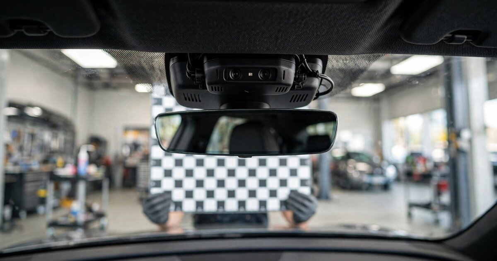

ADAS Calibration Compliance & Documentation SaaS for Independent Auto Glass Shops
A windshield is now a sensor platform. Replace it on the wrong car without recalibrating the forward camera and the automatic emergency braking system may aim 1.8 meters wide at highway speeds. California and Illinois are passing laws that require shops to document calibration results in writing. The software these shops run can look up a part number and file an insurance claim. It cannot tell you whether the car in Bay 3 has a windshield-mounted camera.

The Problem
The U.S. auto glass repair and replacement industry generated $7.9 billion in revenue in 2025 (Kentley Insights), growing at 8.5% annually over the prior five years. The industry processes an estimated 14 to 16 million insurance claims per year in the United States alone (Dataintelo, 2025), with windshield replacements accounting for 54.3% of claim volume. These numbers would be unremarkable if the product being replaced were still just a piece of glass. It is not.
Modern windshields are sensor platforms. The forward-facing camera that powers automatic emergency braking, lane departure warning, and adaptive cruise control is mounted on or adjacent to the windshield in approximately 73% of ADAS-equipped vehicles (Dataintelo, 2025). The global ADAS-equipped vehicle parc exceeded 420 million units in 2025. In the United States, where ADAS penetration in new vehicles now exceeds 90% for at least one windshield-mounted feature (NHTSA), the installed base of cars that need sensor work with every windshield swap is growing by roughly 15 million vehicles per year.
When a technician removes a windshield that houses a forward-facing camera, the camera's mounting angle is disrupted. The physics are unforgiving: a camera mounted 1.2 meters above the road, aimed at a target 100 meters ahead, produces a lateral offset of tan(0.1°) × 100m = 0.175 meters per 0.1 degrees of angular error. At highway following distances of 50-80 meters, that error compounds. Multiple OEM technical service bulletins and industry analyses confirm that even a 0.1-degree misalignment can produce a lateral positioning error exceeding 1.8 meters at highway speeds, meaning the car's automatic emergency braking system may aim at the wrong spot, or the lane-keeping assistant may silently steer toward a guardrail. OEM technical service manuals from virtually every major manufacturer mandate camera recalibration after windshield replacement. Calibration fees range from $150 to over $900 per event depending on the vehicle and procedure type.
The problem is not that shops cannot do the calibration. Equipment from Autel, Bosch, and Hunter Engineering has made static and dynamic calibration accessible to independent shops, with entry-level systems starting at $15,000 and comprehensive multi-OEM rigs running to $80,000 per service center. The problem is that no shop management software in the auto glass vertical handles the compliance workflow that surrounds calibration: detecting that the incoming vehicle requires it, looking up the OEM-specific procedure, documenting the calibration result, producing the written disclosures that state law now requires, and attaching calibration records to the insurance claim. The software stack handles glass. The liability stack requires electronics documentation. They do not talk to each other.
Market Size
Original TAM calculation: The addressable market is auto glass shops that perform or sublet windshield replacements on ADAS-equipped vehicles. The U.S. has approximately 12,000 to 15,000 auto glass service locations, including independent shops, franchise operations (Glass Doctor, Novus), and mobile operators. We exclude Safelite's ~750 company-owned locations (Safelite has proprietary internal systems) and focus on the approximately 11,000 to 14,000 independent and franchise locations that rely on third-party shop management software.
The SaaS product has two tiers. A Compliance tier at $199/month provides automated VIN-to-ADAS detection, OEM procedure lookup, state-specific disclosure document generation, and calibration result recording with digital signature capture. A Professional tier at $449/month adds insurance claim integration for calibration line items, technician certification tracking, calibration equipment maintenance scheduling, and a liability documentation vault with tamper-evident audit trails.
Assuming an addressable base of 12,000 locations with a 60/40 split between Compliance and Professional tiers, blended ARPU is $299/month. At full penetration of the addressable base, the TAM is $43.1 million in annual recurring revenue. More realistically, 3,500 subscribing locations at blended $299/month yields a Year 3 target of $12.6 million ARR. A secondary revenue stream charges $2.50 per calibration documentation package (VIN report + OEM procedure + state disclosure + insurance attachment), targeting 8 million calibration events per year at 10% capture, adding $2 million ARR.
The Product
A compliance and documentation layer purpose-built for the ADAS calibration workflow in auto glass shops, designed to sit alongside (not replace) existing shop management software. Core modules:
- VIN-to-ADAS intelligence engine: The technician scans the VIN at intake. The system cross-references the decoded year, make, model, and trim against a maintained database of ADAS configurations to determine: (a) whether the vehicle has a windshield-mounted forward camera, (b) what specific calibration procedure the OEM mandates after windshield replacement, (c) whether the vehicle requires static calibration (target panel in a controlled space), dynamic calibration (road test at specified speed), or both, and (d) what calibration equipment is compatible. This eliminates the most common compliance failure: shops that replace the windshield on an ADAS-equipped vehicle without realizing calibration is required
- State-specific disclosure generator: California's SB 988 (California Motor Vehicle Glass Act) and Illinois HB 4373 (Motor Vehicle Glass Repair Act) both require written notice to the customer about ADAS status, calibration need, and calibration outcome before and after service. Maryland is considering statewide licensing for ADAS recalibration businesses. The disclosure generator automatically produces jurisdiction-appropriate pre-service and post-service documents based on the shop's location, the vehicle's ADAS configuration, and the calibration result, ready for digital or wet signature
- Calibration result recorder: After calibration, the technician photographs the calibration target setup, records the equipment used (serial number, last calibration date), captures a screenshot of the diagnostic tool's pass/fail output, and digitally signs the record. If calibration fails, the system generates a customer advisory document explaining that the ADAS system should not be relied upon until recalibration by a dealer or qualified specialist, as required by pending state legislation. The entire record is stored in an immutable, timestamped vault
- Insurance claim calibration attachment: Current auto glass EDI workflows (Glaxis, Lynx) handle the glass portion of the claim but have no standardized field for calibration documentation. The product generates a calibration supplement package that can be attached to the insurance claim, including VIN-decoded ADAS specification, OEM procedure reference, calibration equipment certification, technician credential, and pass/fail result. This supports the insurer's requirement that the vehicle be returned to "pre-loss condition" and gives the shop documentation to justify the calibration line item on the claim
Unit Economics
| Metric | Value |
|---|---|
| Monthly subscription (Compliance: VIN decode + disclosures + recording) | $199/location |
| Monthly subscription (Professional: full workflow + insurance integration) | $449/location |
| Blended ARPU (60/40 split) | $299/month |
| Per-event calibration documentation package fee | $2.50/event |
| Data infrastructure cost per subscriber/month | $22 |
| OEM procedure database licensing/maintenance per subscriber/month | $35 |
| Customer acquisition cost | $2,400 |
| Expected LTV (28-month avg retention, 81% gross margin) | $6,777 |
| LTV:CAC ratio | 2.8:1 |
| Gross margin | 81% |
| Startup cost (18-month runway) | $2.1M |
| Break-even | 22 months |
Methodology note: The 28-month average retention assumption reflects the auto glass industry's high shop turnover (IBISWorld estimates 8-10% annual shop closure rate in the independent segment) combined with moderate software switching costs. Shops that embed calibration documentation into their insurance claim workflow face switching costs similar to changing shop management systems. CAC of $2,400 reflects a sales motion concentrated at three to four major industry trade shows per year (Auto Glass Week, SEMA, NACE Automechanika) supplemented by digital marketing through industry publications (Auto Glass Magazine, glassBYTEs.com) and referral partnerships with calibration equipment manufacturers. The $35/month OEM procedure database cost reflects the licensing economics of maintaining current OEM technical service bulletin coverage across 40+ vehicle brands, either through direct OEM agreements or aggregator platforms like ALLDATA or Mitchell. Gross margin of 81% is lower than pure SaaS due to this data licensing layer. LTV calculation: $299 × 28 months × 81% = $6,777. Payback period: 8.0 months.
Go-to-Market
Phase 1 (months 1-8): Launch with VIN-to-ADAS detection and state disclosure generation for California, Illinois, and Utah, the three states with the most advanced ADAS-related auto glass legislation. Recruit 200 shops in these states through partnerships with Autel and Bosch dealer networks, which have strong relationships with independent shops that have already invested in calibration equipment. Offer the Compliance tier free for 90 days to any shop that purchased calibration equipment in the prior 12 months, using equipment vendor customer lists as the acquisition channel. Build the OEM procedure database starting with the 15 highest-volume windshield replacement models (which account for roughly 40% of all replacement events: Ford F-150, Toyota RAV4, Honda CR-V, Chevrolet Silverado, Toyota Camry, Honda Civic, Nissan Rogue, Jeep Grand Cherokee, Toyota Corolla, Subaru Outback, Hyundai Tucson, Kia Sportage, Tesla Model Y, Tesla Model 3, Toyota Highlander).
Phase 2 (months 9-16): Expand OEM procedure coverage to 40+ brands. Add the Professional tier with insurance claim integration. Develop API integrations with the two dominant auto glass shop management platforms: GlasPacLX (GTS Services) and GlassShopGo. These integrations allow calibration data to flow into existing work orders and invoices without requiring the technician to switch between systems. Target the 14-16 million annual claim volume by working with managed glass programs (Lynx Services, Safelite Solutions) to make calibration documentation a standard supplement attachment.
Phase 3 (months 17-24): Expand geographic coverage as additional states pass ADAS disclosure legislation. Launch a fleet-facing module for commercial fleet management companies and rental car operators that need calibration compliance records across large vehicle pools. Approach insurance carriers directly with aggregated, anonymized calibration compliance data, offering a data product that helps underwriters assess which shops consistently calibrate vs. which skip it, creating a market incentive for shop adoption. Enterprise tier at $899/month for multi-location operators (Glass Doctor franchisees, Gerber Collision & Glass).
Competitive Landscape
| Company | What It Does | ADAS Compliance? | Pricing |
|---|---|---|---|
| GlasPacLX (GTS Services) | Full shop management: POS, work orders, NAGS lookup, EDI invoicing | No: manages the glass job, not the sensor job | Contact sales |
| GlassShopGo | Cloud POS with SmartVIN decoder, NAGS catalog, EDI | VIN decode identifies part, not ADAS configuration | From $70/mo |
| Elmo Anywhere | Cloud-based POS + CRM for auto glass | No: operational workflow, no calibration tracking | Contact sales |
| Omega EDI | EDI invoicing + credit card + customer records | No: financial processing only | Contact sales |
| GlassManager | Flat glass + auto glass estimating, scheduling, mobile | No: designed for glaziers, no ADAS awareness | $85/mo |
| Autel MaxiSys ADAS | Calibration hardware + diagnostic software | Calibration execution only; no compliance workflow | $8K-30K (hardware) |
| This startup | ADAS calibration compliance, documentation, and insurance integration | Core product: VIN→ADAS detect, OEM procedures, state disclosures, liability vault | $199-449/mo |
The gap is not accidental. Auto glass shop management software evolved from parts lookup and insurance billing. The competitive moat in that market is NAGS database access (National Auto Glass Specifications, the industry-standard parts catalog) and EDI connectivity with managed glass programs like Glaxis and Lynx. The companies that built these systems had no reason to think about ADAS sensors when their customers' product was a $250 windshield, not a $250 windshield plus a $400 calibration. Now that calibration revenue is approaching parity with glass revenue on ADAS-equipped vehicles, the documentation and compliance layer that wraps around calibration has no software home. Autel, Bosch, and Hunter Engineering build the calibration hardware and diagnostic tools, but their software stops at "pass/fail" on the scan tool screen. What happens between that scan tool result and the insurance claim filing, the customer disclosure document, the liability record, the technician certification check, exists as a paper trail or does not exist at all.
Why Now
Four forces are converging simultaneously. First, ADAS-equipped vehicles are no longer a premium segment; they are the majority of the road fleet. The global parc exceeded 420 million units in 2025, and virtually every new vehicle sold in the United States now includes at least one windshield-mounted sensor. This means the share of windshield replacement jobs that trigger a calibration requirement is crossing from a minority of jobs (an add-on the shop can ignore) to a majority (a workflow the shop cannot avoid). By 2034, virtually all new-vehicle windshield replacements across developed markets will require some form of sensor recalibration.
Second, states are legislating. California's SB 988 would require auto glass shops to notify customers of ADAS status, disclose calibration need, and provide written confirmation of calibration success or failure. Illinois' HB 4373 imposes nearly identical requirements. Maryland is considering statewide licensing for ADAS recalibration businesses. At the federal level, HR 6688 addresses ADAS calibration standards broadly. The legislative trend is unambiguous: shops that cannot produce calibration documentation will face legal exposure in an increasing number of jurisdictions.
Third, insurance economics are shifting. Insurers require that covered repairs return the vehicle to "pre-loss condition." A windshield replacement without ADAS recalibration on a vehicle that requires it does not meet that standard, giving insurers grounds to deny future claims and creating a liability chain that runs from the shop through the managed glass program to the carrier. Major insurers are beginning to mandate calibration as a standard line item, and managed glass programs (Lynx Services, Safelite Solutions) are updating their requirements accordingly. The shop that cannot document calibration will increasingly lose insurance-referred work.
Fourth, the liability exposure from undocumented calibration is becoming quantifiable. The trigonometry is simple: a fraction of a degree of camera misalignment translates to meters of lateral error at highway speeds. If that vehicle's automatic emergency braking fails because the windshield was replaced without recalibration, and the shop cannot produce documentation showing it disclosed the ADAS status, performed or recommended calibration, and recorded the result, the shop has a negligence exposure that its general liability policy may not cover. As MOTOR Magazine documented, ADAS sensor fusion does not always fail cleanly: shops can return vehicles with ADAS systems that are technically on but inaccurate, creating invisible liability.
Original Contribution: The Calibration Documentation Gap Tax
A calculation nobody has published: We can estimate the annual revenue that independent auto glass shops forfeit by lacking calibration documentation infrastructure. Start with the 14-16 million annual auto glass claims in the U.S. (Dataintelo). Windshield replacements account for 54.3% of those claims, yielding 7.6 to 8.7 million replacement events per year. At current ADAS penetration rates, approximately 60% of those vehicles have at least one windshield-mounted sensor (conservative, given that 68-73% of new ADAS vehicles require recalibration, but the on-road fleet skews older). That gives us 4.6 to 5.2 million windshield replacements per year on ADAS-equipped vehicles in the U.S.
Industry surveys suggest that independent shops currently perform or sublet calibration on only 40-50% of ADAS-equipped windshield replacements, primarily because they lack a reliable system to identify which vehicles require it. Assuming a 45% calibration rate, approximately 2.5 to 2.9 million ADAS-equipped windshield replacements per year go uncalibrated. At a conservative average calibration fee of $250 per event, the annual revenue left on the table is $625 million to $725 million. This is the "calibration documentation gap tax": revenue that shops forfeit not because they lack the equipment, but because they lack the workflow intelligence to identify every ADAS vehicle, quote calibration at intake, document the result, and bill it through insurance.
Even a modest improvement in identification rates illustrates the economics. If a compliance SaaS product increases a shop's ADAS identification rate from 45% to 85% (achievable with automated VIN-to-ADAS lookup), a shop performing 15 ADAS-eligible windshield replacements per week captures an additional 6 calibration jobs per week at $250 each, or $1,500/week in incremental revenue, or $78,000/year. Against a subscription cost of $199-449/month ($2,388-5,388/year), the ROI for the shop is 14:1 to 33:1. The software pays for itself in less than two weeks of incremental calibration revenue.
Limitations
This analysis has several gaps that matter. First, the claim that 40-50% of ADAS-equipped windshield replacements go uncalibrated is an industry estimate, not an audited number. There is no centralized reporting of calibration rates. The figure is derived from equipment manufacturer sell-through data (how many calibration events Autel and Bosch record through their cloud-connected tools) compared against total windshield replacement volumes, but this methodology undercounts calibrations performed with offline equipment and overcounts replacements on non-ADAS vehicles in the denominator. The true gap could be narrower.
Second, the OEM procedure database is a competitive moat but also an ongoing cost center. Maintaining current, accurate calibration procedures for 40+ vehicle manufacturers requires either licensing agreements with OEM data aggregators (ALLDATA, Mitchell, MOTOR) or direct OEM partnerships. These licenses are not cheap ($20,000-50,000/year for multi-OEM coverage at a platform level) and they come with usage restrictions that may limit how the data can be displayed to end users. A startup's ability to offer comprehensive OEM procedure lookup at $199/month depends on amortizing that licensing cost across a subscriber base that may take 18+ months to build.
Third, the legislative environment, while trending toward mandatory disclosure, is not yet a nationwide requirement. As of July 2026, California and Illinois have advanced bills but neither has enacted them into law. If the legislative wave stalls, the urgency driver for shop adoption weakens considerably. Many independent shop owners operate on thin margins and resist new software subscriptions absent a clear mandate or a direct revenue impact they can measure.
Fourth, Safelite, which controls an estimated 30% of the U.S. auto glass market through company-owned and affiliated locations, has proprietary internal systems that already handle ADAS workflows. If Safelite builds calibration compliance features into its managed glass program (Safelite Solutions/Lynx) and offers them to its network of affiliated shops, the addressable market for an independent SaaS product shrinks substantially. Safelite's incentive to do this is strong: it differentiates their network and creates another dependency for affiliated shops.
Strongest Counterargument
The most compelling case against this startup is that the calibration equipment manufacturers themselves will build the compliance layer, not a standalone SaaS company. Autel, Bosch, and Hunter Engineering already sell the $15,000-$80,000 calibration rigs. Their diagnostic tools already generate pass/fail reports. Each of these companies has an installed base of thousands of shops using their cloud-connected calibration platforms. The incremental engineering effort to add VIN-to-ADAS detection, disclosure document generation, and insurance claim attachment to an existing calibration tool platform is modest compared to building a separate SaaS product from scratch.
Autel's MaxiSys ADAS platform already connects to the cloud, updates OEM procedures over the air, and stores calibration records by VIN. Adding compliance document generation is a firmware update away. Bosch's Automotive Service Solutions division has both the calibration hardware and the enterprise software team to build a compliance module. Hunter Engineering, which dominates wheel alignment in the U.S. and has expanded aggressively into ADAS calibration, could bundle compliance documentation into its HunterNet connected-shop platform.
The counterargument is strengthened by the economics: a calibration equipment manufacturer can bundle compliance software for free (or a small add-on fee) to increase hardware sales, while a standalone SaaS company must justify a $199-449/month subscription purely on compliance and revenue-capture value. If Autel adds compliance documentation to its existing $15,000 rig at no additional cost, the standalone SaaS product must compete against free. The historical precedent in adjacent industries (wheel alignment shops, where alignment documentation is built into the aligner, not sold separately) suggests that equipment manufacturers eventually capture the compliance software layer adjacent to their hardware.
The defense against this argument is that equipment manufacturers make equipment-specific software, not shop-wide compliance platforms. A shop using Autel for calibration and Bosch for diagnostics still needs a single system to aggregate records, generate state-specific disclosures regardless of equipment brand, and attach documentation to insurance claims through Glaxis or Lynx. The equipment vendor builds for their device; the compliance SaaS builds for the shop. Whether that distinction survives long-term is an open question.
The Bottom Line
The U.S. auto glass industry is undergoing its most significant technical transformation since the shift from flat glass to laminated windshields. The 14-16 million annual glass claims that keep 12,000+ shops in business are increasingly claims on sensor platforms, not just glass. State legislatures are moving to mandate calibration disclosure. Insurance carriers are tightening pre-loss-condition requirements. And every shop that cannot document its calibration workflow carries an invisible liability that grows with every ADAS-equipped vehicle that rolls through the bay. The software that runs these shops was built for a simpler product. The compliance layer that wraps around the new product does not exist. Someone will build it. The question is whether it is a standalone SaaS company or a feature the calibration equipment manufacturers bundle in.
What You Can Do
If you run an auto glass shop with calibration equipment: pull your work orders for the last 90 days and check how many windshield replacements were on ADAS-equipped vehicles. Then check how many of those had a documented calibration event. If there is a gap, you are carrying uncapped negligence exposure on every vehicle you returned without documentation, and you are leaving $250+ per job in calibration revenue on the table. Run the VIN of every pending job through your OEM technical service manual access (ALLDATA, Mitchell, or the manufacturer's site) and flag which ones require calibration. If you cannot answer that question for the car in the bay right now, you need a system that can.
If you build auto glass shop management software: your EDI and NAGS lookup are table stakes. The next defensible feature is ADAS workflow integration. Build or partner to add VIN-to-ADAS detection, OEM procedure lookup, and calibration documentation to your platform before someone else wraps a compliance layer around your product and owns the relationship with the shop.
If you sell calibration equipment to auto glass shops: your hardware sale is no longer just hardware. The shop buying your $15,000 rig needs the compliance documentation that justifies the rig's existence to insurance companies and state regulators. Building that compliance layer into your platform is an upsell for current customers and a differentiation play against competitors who sell naked hardware.
Related
📰 Collision Repair Rate Intelligence SaaS — pricing transparency for auto body shops, the adjacent industry facing the same ADAS-driven complexity increase
📰 EV Charger Uptime Compliance SaaS — another compliance layer emerging from technology that outpaced the regulatory and documentation infrastructure
📰 Elevator Inspection Compliance SaaS — the compliance documentation pattern applied to a different regulated inspection category with state-by-state requirements